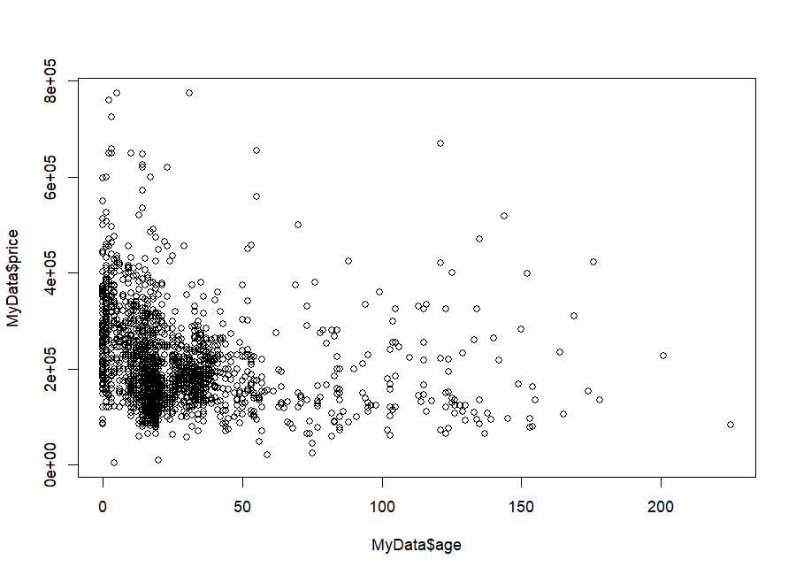
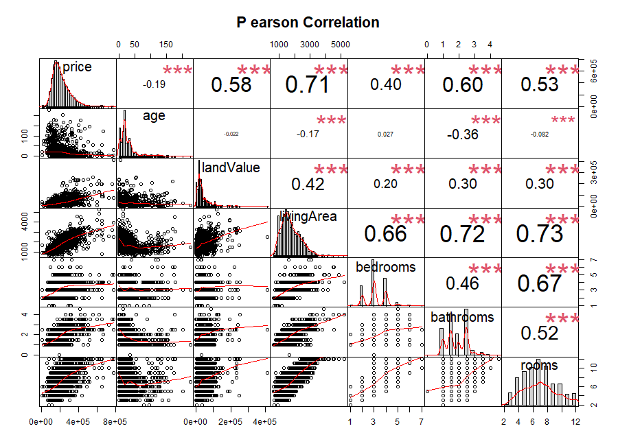
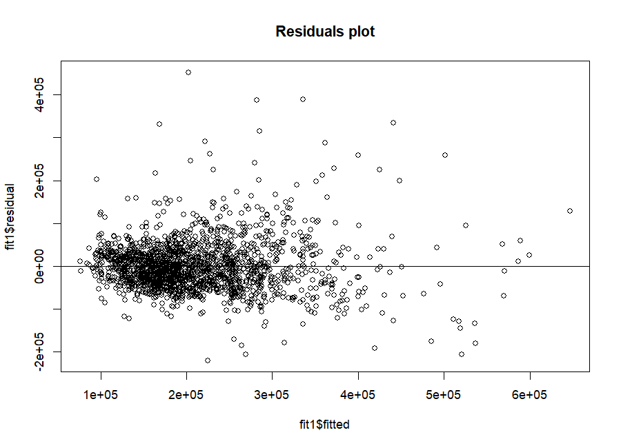
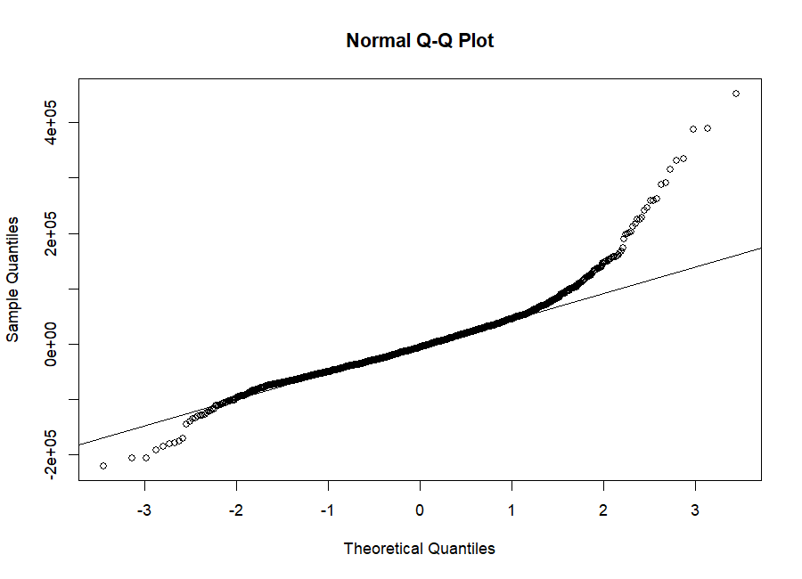
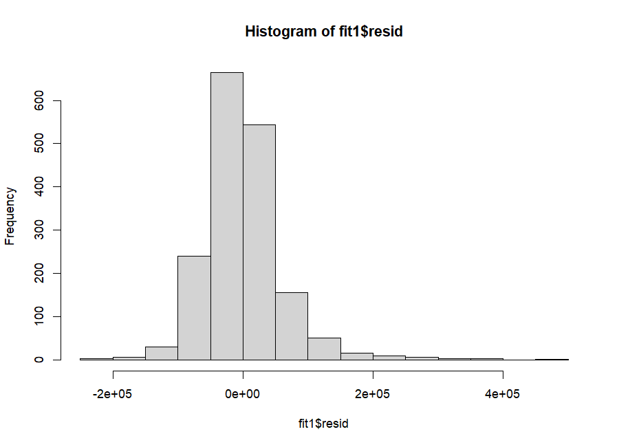
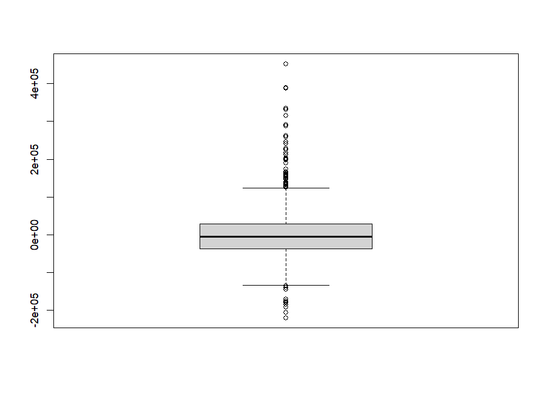

The idea of regression modeling
A regression model is an equation that describes how one variable (the response, Y) depends on one or more other variables (the predictors or explanatory variables, X₁, X₂, …). In this lecture the response is the price of a house and the predictors are its age, land value, living area, and number of bedrooms, bathrooms and rooms.
We want a recipe: "start from a base price, add so many dollars per square foot, subtract so many per year of age, …". Regression finds the numbers in that recipe that best match the 1,728 houses we have. We use the recipe for two things: explaining (which features matter, and by how much?) and predicting (what should this house cost?).
The workflow in the script is the workflow you'll use in almost every regression project:
- Load and look at the data (
read.csv,head,summary). - Explore relationships with plots and correlations.
- Fit a model with
lm()and readsummary(). - Compare alternative models (
anova()). - Check the assumptions using the residuals.
Loading and looking at the data
MyData = read.csv("Home Price.csv" )
head(MyData,4)
names(MyData)
price age landValue livingArea bedrooms bathrooms rooms heating fuel 1 132500 42 50000 906 2 1.0 5 electric electric 2 181115 0 22300 1953 3 2.5 6 hot water/steam gas 3 109000 133 7300 1944 4 1.0 8 hot water/steam gas 4 155000 13 18700 1944 3 1.5 5 hot air gas waterfront newConstruction centralAir 1 No No No 2 No No No 3 No No No 4 No No No [1] "price" "age" "landValue" "livingArea" [5] "bedrooms" "bathrooms" "rooms" "heating" [9] "fuel" "waterfront" "newConstruction" "centralAir"
read.csv("Home Price.csv")reads a comma-separated file into a data frame — R's table type, where each column is a variable and each row is one house. R looks for the file in the working directory; in RStudio use Session → Set Working Directory → To Source File Location so that the script and CSV are found together.head(MyData, 4)shows the first 4 rows. The output wraps because the table is wider than the console.names()lists the column names.
| Column | Meaning | Type |
|---|---|---|
| price | sale price in dollars — the response Y | number |
| age | age of the house in years (0 = brand new) | number |
| landValue | value of the land alone, in dollars | number |
| livingArea | living area in square feet | number |
| bedrooms · bathrooms · rooms | counts (bathrooms can be 1.5, 2.5 — a "half bath" has a toilet but no shower) | number |
| heating · fuel | heating system and fuel (e.g. "hot air", "gas") | text (category) |
| waterfront · newConstruction · centralAir | Yes / No features | text (category) |
The first 7 columns are numbers; the last 5 are text categories. That's why the script keeps writing MyData[ ,1:7] or MyData[,(1:7)] — "all rows, columns 1 to 7" (Lecture 1 indexing!). Correlation and the models in this lecture use only the numeric columns.
summary(): five numbers + the mean, for every column
summary(MyData)
price age landValue livingArea bedrooms Min. : 5000 Min. : 0.00 Min. : 200 Min. : 616 Min. :1.000 1st Qu.:145000 1st Qu.: 13.00 1st Qu.: 15100 1st Qu.:1300 1st Qu.:3.000 Median :189900 Median : 19.00 Median : 25000 Median :1634 Median :3.000 Mean :211967 Mean : 27.92 Mean : 34557 Mean :1755 Mean :3.155 3rd Qu.:259000 3rd Qu.: 34.00 3rd Qu.: 40200 3rd Qu.:2138 3rd Qu.:4.000 Max. :775000 Max. :225.00 Max. :412600 Max. :5228 Max. :7.000 bathrooms rooms heating fuel waterfront Min. :0.0 Min. : 2.000 Length :1728 Length :1728 Length :1728 1st Qu.:1.5 1st Qu.: 5.000 N.unique : 3 N.unique : 3 N.unique : 2 Median :2.0 Median : 7.000 N.blank : 0 N.blank : 0 N.blank : 0 Mean :1.9 Mean : 7.042 Min.nchar: 7 Min.nchar: 3 Min.nchar: 2 3rd Qu.:2.5 3rd Qu.: 8.250 Max.nchar: 15 Max.nchar: 8 Max.nchar: 3 Max. :4.5 Max. :12.000 (newConstruction and centralAir columns omitted)
Min · Q1 · Median · Mean · Q3 · Max
1st Qu. (Q1): 25% of houses are below this value. Median: the middle house. 3rd Qu.: 75% are below. The middle 50% of prices lie between $145,000 and $259,000.
Mean > Median ⇒ long right tail
Price: mean $211,967 > median $189,900. A few very expensive houses (max $775,000) pull the mean up. Same for age and landValue. Keep this in mind — it shows up again in the residuals.
For text columns, R 4.6 (used here) prints Length / N.unique / N.blank / nchar. Older R versions print Length / Class / Mode instead. Both just tell you "this is text, 1,728 values". Nothing is wrong with your output if it looks different.
Getting one column: $, attach() and sd()
MyData$age # prints all 1728 ages (long!) MyData$price attach(MyData) sd(age) plot(MyData$age, MyData$price) class(MyData)
[1] 42 0 133 13 0 31 33 23 36 4 123 1 13 153 9 88 9 0 82 17 12 ... (1728 values) ... [1] 29.20999 [1] "data.frame"
MyData$age= "the column called age inside MyData". The dollar sign is how you reach into a data frame by name.attach(MyData)lets you type justageinstead ofMyData$age. Convenient, but risky: if you later create a variable calledage, or attach a second dataset, R may silently use the wrong one. Most R users avoidattach()and writeMyData$ageor usedata = MyDatainside functions.sd(age)= standard deviation = typical distance of a house's age from the average age. Here ≈ 29 years.

Correlation matrix: which variables move together?
The correlation coefficient r measures how strongly two variables follow a straight-line relationship. It goes from −1 (perfect downhill line) through 0 (no linear pattern) to +1 (perfect uphill line). Lecture 3 covers the formula in detail; here we use it to scan many pairs at once.
cor_matrix = cor(MyData[,(1:7)]) cor_matrix cor(MyData[,(1:7)], method= "spearman") #write.csv(cor_matrix, "cor_matrix.csv")
price age landValue livingArea bedrooms bathrooms rooms price 1.0000000 -0.18879259 0.5812655 0.7123902 0.4003487 0.5972498 0.53117012 age -0.1887926 1.00000000 -0.0218179 -0.1742420 0.0271248 -0.3618973 -0.08226402 landValue 0.5812655 -0.02181790 1.0000000 0.4234408 0.2024492 0.2974978 0.29886515 livingArea 0.7123902 -0.17424195 0.4234408 1.0000000 0.6561957 0.7185637 0.73366584 bedrooms 0.4003487 0.02712480 0.2024492 0.6561957 1.0000000 0.4580331 0.67186325 bathrooms 0.5972498 -0.36189725 0.2974978 0.7185637 0.4580331 1.0000000 0.51758469 rooms 0.5311701 -0.08226402 0.2988652 0.7336658 0.6718633 0.5175847 1.00000000
How to read it: the cell in row price, column livingArea (0.71) is the correlation between price and living area. The matrix is symmetric (cor(A,B) = cor(B,A)) and the diagonal is always 1 (every variable correlates perfectly with itself). The commented-out write.csv line saves the matrix to cor_matrix.csv — that file is in your Lec 2 folder, ready to open in Excel.
Pearson vs Spearman
Linear relationship of the values
Uses the actual numbers. Sensitive to outliers and only detects straight-line patterns.
Monotonic relationship of the ranks
First replaces each value by its rank (1st, 2nd, 3rd…), then computes Pearson on the ranks. Detects any "always going up/down" pattern, even curved, and is robust to outliers.
Compare price–age: Pearson −0.19 but Spearman −0.32. Age is very skewed (a few houses are 150–225 years old). Those extreme old houses don't follow the "older = cheaper" trend, which weakens Pearson. Ranks tame the extremes, so Spearman sees the trend more clearly. When the two differ a lot, look for outliers or curvature.
chart.Correlation(): everything in one picture
#install.packages("PerformanceAnalytics") # run once
library("PerformanceAnalytics")
chart.Correlation(MyData[,(1:7)])
chart.Correlation(MyData[,(1:7)], histogram=F)
install.packages() downloads a package once; library() switches it on in every new session. (When it loads you'll see messages about xts, zoo and "masked" objects — those are harmless notes, not errors.)

- livingArea is the strongest single predictor of price (r = 0.71), then bathrooms (0.60) and landValue (0.58).
- Some predictors are strongly correlated with each other: livingArea–rooms 0.73, livingArea–bathrooms 0.72, bedrooms–rooms 0.67. Bigger houses have more of everything. This overlap is called multicollinearity and explains a surprise in the model below.
- Almost every pair gets *** — with 1,728 houses even a weak correlation is "statistically significant". Significant ≠ strong!
Multiple regression with lm()
fit1 <- lm( price ~ ., data = MyData[,1:7]) summary(fit1)
lm = linear model. The first argument is a formula:
| Formula | Meaning |
|---|---|
| price ~ livingArea | price explained by livingArea (the tilde ~ reads "is modelled by") |
| price ~ age + livingArea | two predictors |
| price ~ . | the dot = all other columns of the data → here the 6 other numeric columns |
| price ~ . - 1 | all other columns, but no intercept (−1 removes β₀) |
Reading summary(fit1) — click the highlighted parts
# summary(fit1)
Call: lm(formula = price ~ ., data = MyData[, 1:7]) Residuals: Min 1Q Median 3Q Max -220228 -36920 -5900 27842 452346 Coefficients: Estimate Std. Error t value Pr(>|t|) (Intercept) 2.193e+04 6.554e+03 3.345 0.000839 *** age -1.220e+02 5.511e+01 -2.213 0.027027 * landValue 9.492e-01 4.630e-02 20.501 < 2e-16 *** livingArea 7.158e+01 4.617e+00 15.504 < 2e-16 *** bedrooms -1.002e+04 2.604e+03 -3.846 0.000124 *** bathrooms 2.430e+04 3.389e+03 7.170 1.11e-12 *** rooms 2.903e+03 9.956e+02 2.916 0.003591 ** --- Signif. codes: 0 '***' 0.001 '**' 0.01 '*' 0.05 '.' 0.1 ' ' 1 Residual standard error: 60440 on 1721 degrees of freedom Multiple R-squared: 0.6243, Adjusted R-squared: 0.623 F-statistic: 476.6 on 6 and 1721 DF, p-value: < 2.2e-16
The fitted recipe is price ≈ 21,927 − 122·age + 0.95·landValue + 71.6·livingArea − 10,016·bedrooms + 24,302·bathrooms + 2,903·rooms. All six ingredients matter (all have stars). Together they explain about 62% of why prices differ; the remaining 38% comes from things not in the model (location, condition, view…). A typical prediction is off by about $60,000.
A coefficient in multiple regression is never "the effect of bedrooms" in general. It is the effect of one more bedroom when all the other predictors stay the same. That's why bedrooms can be negative here while its simple correlation with price is positive. Try it in the calculator: add a bedroom without adding living area or rooms → price drops.
A model without intercept — and the R² trap
fit2 <- lm(price ~ .-1, data = MyData[,1:7]) summary(fit2)
Coefficients:
Estimate Std. Error t value Pr(>|t|)
age -5.928e+01 5.198e+01 -1.140 0.25428
landValue 9.471e-01 4.643e-02 20.398 < 2e-16 ***
livingArea 6.941e+01 4.585e+00 15.140 < 2e-16 ***
bedrooms -6.201e+03 2.348e+03 -2.641 0.00835 **
bathrooms 2.871e+04 3.132e+03 9.166 < 2e-16 ***
rooms 3.267e+03 9.926e+02 3.292 0.00102 **
---
Residual standard error: 60620 on 1722 degrees of freedom
Multiple R-squared: 0.9329, Adjusted R-squared: 0.9327
F-statistic: 3993 on 6 and 1722 DF, p-value: < 2.2e-16Removing the intercept forces the plane through the origin: "a house with 0 of everything costs $0". Two things changed: age is no longer significant, and R² jumped from 0.62 to 0.93. Is fit2 suddenly a much better model? No!
With an intercept, R² compares the model with the simplest alternative "predict every house at the average price". Without an intercept, R switches to comparing with "predict every house at $0" — a ridiculous baseline that anything beats. The two R² values are measured on different scales and cannot be compared.
Proof: if we measure fit1 on fit2's scale (vs. $0), fit1 scores 0.9334 — higher than fit2's 0.9329. Look also at the residual standard error: fit2's errors are bigger ($60,620 vs $60,440).
Comparing the two models properly: anova()
anova(fit1,fit2) # in this case is significant
Analysis of Variance Table
Model 1: price ~ age + landValue + livingArea + bedrooms + bathrooms + rooms
Model 2: price ~ (age + landValue + livingArea + bedrooms + bathrooms + rooms) - 1
Res.Df RSS Df Sum of Sq F Pr(>F)
1 1721 6.2878e+12
2 1722 6.3287e+12 -1 -4.0891e+10 11.192 0.0008392 ***anova() compares two nested models (one is the other with something removed). It asks: "does removing the intercept make the fit significantly worse?"
- RSS = residual sum of squares (total squared error). Without intercept it grows from 6.2878×10¹² to 6.3287×10¹².
- Df = −1: model 2 has one parameter less. Sum of Sq = the change in RSS.
- F = (increase in RSS per removed parameter) ÷ (RSS of the bigger model per residual df):
Decision: p = 0.0008 < 0.05 → removing the intercept makes the model significantly worse → keep the intercept (fit1). The script's comment "in this case is significant" means exactly this. (Notice the p-value 0.000839 is the same as the intercept's p-value in summary(fit1) — testing one coefficient with an F-test is equivalent to its t-test: F = t² = 3.345² ≈ 11.19.)
Residual analysis: checking the assumptions
A residual is what the model got wrong for one house: \(e_i = y_i - \hat y_i\) (actual − predicted). The p-values and confidence intervals from summary() are only trustworthy if the errors behave nicely: centred at zero, constant spread, no pattern, and roughly normal. Since we can't see the true errors, we inspect the residuals.
windows() # open a new plot window (Windows only)
plot(fit1$fitted , fit1$residual) # residuals vs fitted values
abline(0,0) # horizontal line at 0
title("Residuals plot")
qqnorm(fit1$residuals) ; qqline(fit1$residuals)
hist(fit1$resid)
shapiro.test(fit1$resid)
boxplot(fit1$resid)
Shapiro-Wilk normality test data: fit1$resid W = 0.91067, p-value < 2.2e-16
fit1$fittedandfit1$residualpull pieces out of the model object with$. R accepts partial names, sofit1$resid=fit1$residuals.abline(0, 0)draws a line with intercept 0 and slope 0 — the horizontal zero line.windows()opens a separate plot window on Windows. It isn't needed in RStudio (and doesn't exist on Mac — there it'squartz()).




The Shapiro–Wilk test
H₀: the residuals are normal
H₁: they are not normal. W close to 1 = very normal-looking.
W = 0.911, p < 2.2×10⁻¹⁶
p < 0.05 → reject H₀: the residuals are not normally distributed. This confirms what the Q-Q plot shows.
With 1,728 observations, Shapiro–Wilk detects even tiny departures from normality, so always look at the plots too. Mild non-normality matters less in large samples (the coefficient estimates are still fine); the funnel shape (unequal spread) is the bigger concern for the standard errors. A common fix — beyond this lecture's script — is to model log(price) instead of price.
Check yourself
Lecture 2 quiz
lm(price ~ ., data = MyData[,1:7]) use as predictors?MyData[,1:7], so: age, landValue, livingArea, bedrooms, bathrooms, rooms.anova() (or residual standard error) to compare. anova gave p = 0.0008 → the intercept is needed.Summary
read.csv→ data frame; inspect withhead,names,summary; reach columns with$.cor(data)gives a correlation matrix;method = "spearman"uses ranks (robust).chart.Correlationshows histograms, scatters and r's together.lm(y ~ ., data)fits a multiple regression;- 1drops the intercept.- Coefficients are effects holding the other predictors fixed; stars show significance; R² = share of variation explained; F-test = is the model useful at all.
- R² without intercept is not comparable — compare nested models with
anova(). - Check residuals: vs fitted (pattern/funnel), Q-Q & histogram (normality), boxplot (outliers),
shapiro.test(H₀: normal). - For the home prices: a useful model (R² = 0.62), but residuals show a funnel and a heavy right tail.